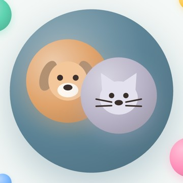
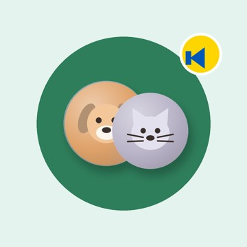

Частина II · Технологія
Як це влаштовано
Простими словами, без коду. Головний принцип: особисте — на телефоні власника, а на нашому сервері — лише загальне: каталог, партнери, поради, новини й пересилання постів у групу.
Телефон власникаЗастосунок. Історія, паспорт, здоров'я, нагадування — у базі на самому телефоні. Фото й відео — у галереї.
Google DriveРезервна копія в прихованій папці застосунку. Бачить лише власник.
Наш сервер «uop»Хмара Cloudflare Workers — дата-центри по всьому світу, без власного «заліза». Віддає застосунку партнерів, поради дня, каталог, новини каналу, сторінки запису; пересилає пости «Лапкової пошти».

TelegramГрупа спільноти, канал новин і бот «Лапкова пошта».
Зовнішні джерелаСайти клінік і салонів, OpenStreetMap, сторінки онлайн-запису EasyWeek, Google Maps.
Телефон ⇄ сервер: лише загальні дані
Сервер ⇄ Telegram: пости й новини
Телефон ⇄ Google Drive: напряму, повз сервер
Застосунок
- Написаний на Flutter (Google) — з того самого коду згодом збирається версія для iPhone.
- Складається з окремих модулів: улюбленці, історія, здоров'я, нагадування, прогулянки, спільнота, сервіси, медіа, голос, резервна копія. Нові можливості додаються, не ламаючи старих.
- Дані — у локальній базі на телефоні; працює й без інтернету.
- Розпізнавання мови — засобами самого телефона.
- Нагадування — як системний будильник: приходять навіть при закритому застосунку.
- Дві мови; за кордоном пошук англійською.
Сервер «uop»
- Cloudflare Workers — «безсерверна» хмара: не треба орендувати й обслуговувати комп'ютер; відповідає з найближчого до людини дата-центру.
- Партнерів, поради й каталог змінюємо без нової версії застосунку — телефони підхоплюють зміни самі.
- Відповіді зберігаються в кеші (новини — на 15 хвилин): швидко й майже безкоштовно.
- Секретні ключі (як-от ключ бота) — лише на сервері, у застосунку їх немає.
- Зараз — у межах безкоштовного рівня.

Новини каналу: від допису до головного екрана
1. ДописСтаттю готуємо з ШІ-асистентом (Grok): заголовок першим рядком, текст, #собаки чи #коти
→
2. КаналПублікуємо в Telegram-каналі universe_of_pets_ua_news — тричі на день
→
3. Сервер читаєКожні 15 хвилин бере свіжі дописи з публічної сторінки каналу й розпізнає хештеги
→
4. ЗастосунокЗаголовок в «Інфозоні» — лише тим, кому підходить: власникам собак, котів чи всім
Жодного ручного перенесення: опублікували в каналі — за кілька хвилин новина на головній у користувачів. Старші за тиждень зникають самі.
«Лапкова пошта»: пост у групу одним дотиком
1. Застосунок«Мурка ділиться в групі»: фото чи відео й текст ідуть на наш сервер
→
2. ПеревіркаЗапит саме з нашого застосунку й не частіше 6 постів на годину — захист від спаму
→
3. Бот@UoPone_bot публікує пост через офіційний інтерфейс Telegram
→
4. ГрупаПост від «Лапкової пошти»; власник одразу може його відкрити
Ключ бота — лише на сервері як секрет. Ім'я й акаунт власника в пості не показуються.
Онлайн-запис до партнерів
1. «Записатися»На картці партнера в Сервісах
→
2. Сторінка салонуПублічна сторінка запису EasyWeek — прямо в застосунку
→
3. «Дякуємо!»Застосунок бачить, що запис завершено
→
4. НагадуванняДата, салон, послуга — заповнюються самі
Прямий програмний доступ EasyWeek дає лише в платному модулі для розробників — це наступний крок.
Каталог ветклінік і грумерів: від таблиці до карти
1ЗбираємоВласні таблиці команди, відкрита мапа OpenStreetMap, пошук в інтернеті
2ЗвіряємоКожне місце — на сайті самого закладу: адреса, телефон, послуги; без дублікатів, мережі — по філіях
3КоординатиКожній адресі — точка на мапі й район; зведена таблиця Excel
4На серверГотовий каталог — на наш сервер; оновлюється без нової версії застосунку
5ТелефонОтримує каталог і місцезнаходження власника
6Перевірка GPSПід час тривог GPS збивають: якщо точка далі 60 км від будь-якого відомого місця — список за районами, без хибних відстаней
7ПорядокПартнери зверху, далі — найближчі; лише місця з адресою і телефоном чи сайтом
8Список і картаОднакові картки: дзвінок · сайт · маршрут · запис
Чому не просто Google
Пошук місць від Google (Places) коштує гроші за кожен запит і потребує платіжної картки; відкрита мапа по Києву неповна. Власний перевірений каталог — безкоштовний, точніший і стає основою для партнерства із закладами.
Приватність і безпека
- Без акаунтів і реєстрації; особисті дані не потрапляють на наш сервер.
- Копія — у власному Google Drive власника, у прихованій папці застосунку.
- Телефон хазяїна зберігається лише на телефоні.
- Жодних секретних ключів у застосунку — лише на сервері.
- Жодних медичних порад і діагнозів.
Як ведеться розробка
- Увесь код — у системі контролю версій Git (GitHub), кожна зміна з описом.
- Розробка з ШІ-асистентом (Claude): швидкі ітерації, перевірка кожної зміни на справжньому телефоні.
- Три збірки поруч: робоча, демо для перевірок і тестова — з однаковим номером версії.
- Щоденник розробки й інструкція тестувальника до кожної версії.